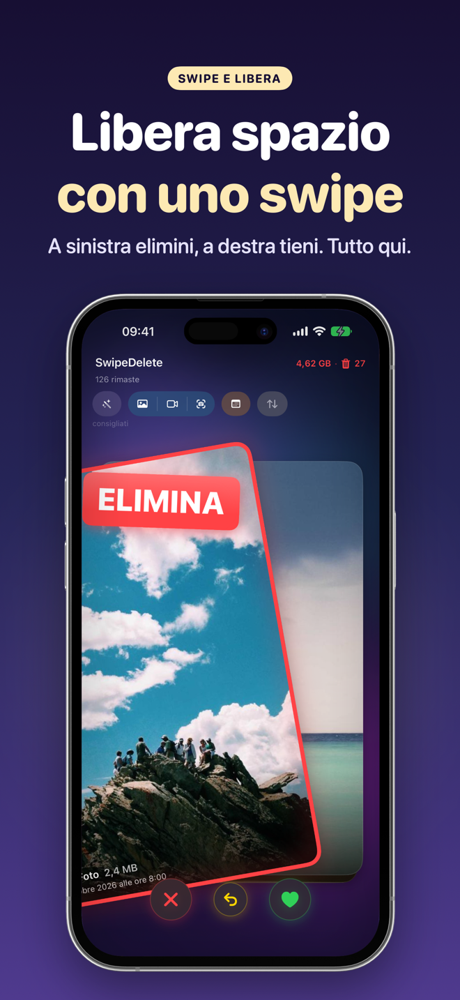

Per i doppioni identici usa l'album Foto › Album › Utility › Duplicati (iOS 16 e successivi) e tocca Unisci. Per gli scatti quasi identici — tre foto dello stesso tramonto, dieci prove per un selfie — iOS non ha un'unione automatica: devi confrontarli e tenere solo il migliore.
Doppioni identici: l'album Duplicati
- Apri Foto e scorri fino ad Album (o alle raccolte, a seconda della versione di iOS).
- Nella sezione Utility tocca Duplicati. Se non lo vedi, iOS non ha trovato doppioni oppure sta ancora indicizzando la libreria (succede soprattutto dopo un ripristino: lascia l'iPhone in carica e bloccato per qualche ora).
- Per ogni gruppo tocca Unisci: iOS conserva la versione di qualità più alta, unisce i dati utili e sposta le copie in «Eliminati di recente».
- Per unire tutto in una volta: Seleziona › Seleziona tutto › Unisci.
Scatti quasi identici: la parte che occupa di più
I veri doppioni sono pochi; quello che riempie la libreria sono le varianti: lo stesso soggetto ripreso più volte di fila. iOS non li considera duplicati, quindi restano tutti. Un metodo manuale efficace:
- Apri la Libreria in vista per giorni o mesi e cerca le serie di miniature simili.
- Apri la prima foto della serie e scorri tra le varianti a schermo intero.
- Metti un cuore a quella migliore.
- Torna alla griglia, tocca Seleziona, seleziona le altre e tocca il cestino.
Funziona, ma su migliaia di foto diventa lungo: è proprio il caso in cui uno strumento che porta in cima i quasi-duplicati fa risparmiare più tempo.
Raffiche: decine di fotogrammi quasi uguali
Le foto a raffica sono il caso estremo di scatti quasi identici: nella libreria appaiono come una sola miniatura, ma ogni fotogramma occupa spazio. Per tenere solo il migliore:
- Vai in Foto › Album › Tipi di media › Sequenze (se l'album non c'è, non hai raffiche salvate).
- Apri una sequenza e tocca Seleziona: vedi tutti i fotogrammi in fila.
- Tocca quello (o quelli) da tenere — soggetto a fuoco, occhi aperti — poi Fine.
- Scegli di conservare solo i preferiti: iOS elimina gli altri fotogrammi.
Non dimenticare «Eliminati di recente»
Sia Unisci sia l'eliminazione manuale spostano le foto in Eliminati di recente per circa 30 giorni. Lo spazio torna disponibile solo dopo averle eliminate anche da lì.
Come farlo con SwipeDelete
- Apri SwipeDelete e lascia attive le Smart Suggestions: il motore on-device (Apple Vision) porta in cima al mazzo gli scatti quasi identici e le raffiche non selezionate.
- Guarda le varianti una dopo l'altra: a destra quella da tenere, a sinistra le altre.
- Se cambi idea, tocca annulla per ripristinare l'ultima scelta.
- Apri il cestino, controlla la griglia e conferma l'eliminazione.
Nessuna foto lascia l'iPhone durante l'analisi.
Prossimamente suApp Store
Domande frequenti
Perché non vedo l'album Duplicati?
Richiede iOS 16 o successivo e compare solo se iOS ha trovato doppioni. Dopo un ripristino l'analisi può richiedere tempo.
Unisci cancella la foto migliore?
No: iOS conserva la versione di qualità più alta e sposta le altre in «Eliminati di recente», dove puoi ancora recuperarle.
Dove trovo tutte le mie foto a raffica?
In Foto › Album › Tipi di media › Sequenze. Puoi tenere uno o più fotogrammi per ogni raffica.
Le foto simili sono considerate duplicati?
No. L'album Duplicati riguarda copie identiche o quasi; le varianti dello stesso scatto vanno scelte a mano o con uno strumento come SwipeDelete.